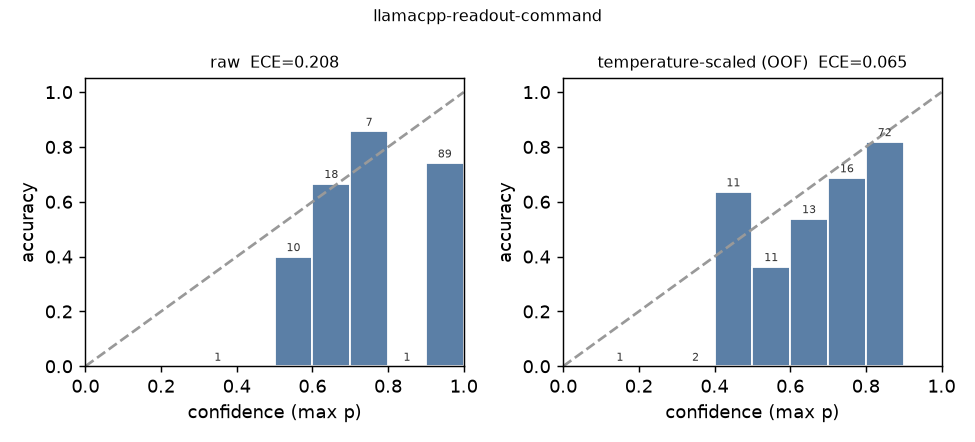
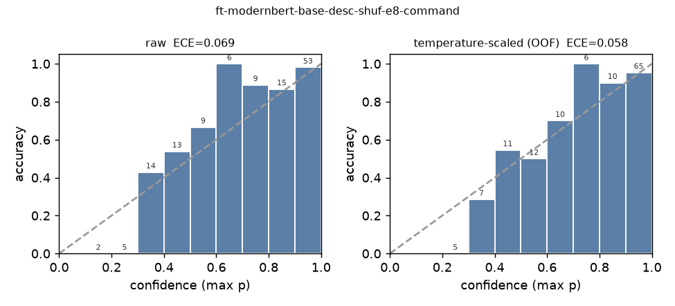
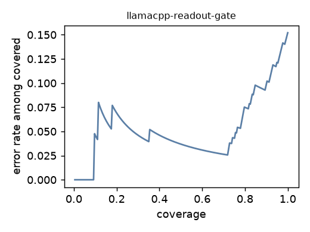

<title>Jevlet</title>
<link rel="stylesheet" href="https://fonts.googleapis.com/css2?family=IBM+Plex+Serif:wght@500;600&family=IBM+Plex+Sans:ital,wght@0,400;0,500;0,600;1,400&family=IBM+Plex+Mono:wght@400;500&display=swap">
<style>
  :root {
    --ground: #f3f5f4; --surface: #ffffff; --ink: #172026; --muted: #5e6b72; --rule: #d3dbd8;
    --accent: #2f6690; --accent-soft: #e3edf4;
    --ok: #2e7d5b; --ok-soft: #e2f1e8; --warn: #c7831c; --warn-soft: #f7ecd6; --bad: #b5432f; --bad-soft: #f6e2dd;
    --readout: #2f6690; --encoder: #c98a2b; --finetuned: #a8404b; --generative: #6b7378;
    --serif: "IBM Plex Serif", Georgia, "Times New Roman", serif;
    --sans: "IBM Plex Sans", system-ui, "Segoe UI", Roboto, sans-serif;
    --mono: "IBM Plex Mono", ui-monospace, Menlo, Consolas, monospace;
  }
  @media (prefers-color-scheme: dark) {
    :root:not([data-theme="light"]) {
      --ground: #0f1518; --surface: #161e22; --ink: #e6ecee; --muted: #98a6ac; --rule: #2a363b;
      --accent: #7fb0d6; --accent-soft: #1c2b36;
      --ok: #63c08f; --ok-soft: #173126; --warn: #e2a64c; --warn-soft: #3a2c15; --bad: #e07a68; --bad-soft: #3d201c;
      --readout: #7fb0d6; --encoder: #e2a64c; --finetuned: #e28a93; --generative: #9aa6ab;
    }
  }
  :root[data-theme="dark"] {
    --ground: #0f1518; --surface: #161e22; --ink: #e6ecee; --muted: #98a6ac; --rule: #2a363b;
    --accent: #7fb0d6; --accent-soft: #1c2b36;
    --ok: #63c08f; --ok-soft: #173126; --warn: #e2a64c; --warn-soft: #3a2c15; --bad: #e07a68; --bad-soft: #3d201c;
    --readout: #7fb0d6; --encoder: #e2a64c; --finetuned: #e28a93; --generative: #9aa6ab;
  }
  * { box-sizing: border-box; }
  body { margin: 0; background: var(--ground); color: var(--ink); font: 16px/1.6 var(--sans); }
  main { max-width: 780px; margin: 0 auto; padding: 2.5rem 1.25rem 5rem; }
  h1 { font: 600 2rem/1.15 var(--serif); margin: 0 0 .4rem; text-wrap: balance; letter-spacing: -.01em; }
  h2 { font: 600 1.35rem/1.25 var(--serif); margin: 2.6rem 0 .7rem; text-wrap: balance; }
  h3 { font: 600 1.02rem/1.3 var(--sans); margin: 1.6rem 0 .4rem; }
  p { margin: .7rem 0; max-width: 68ch; }
  .lede { color: var(--muted); font-size: 1.05rem; max-width: 62ch; }
  .eyebrow { font: 500 .72rem/1 var(--mono); letter-spacing: .12em; text-transform: uppercase; color: var(--accent); margin-bottom: .6rem; }
  a { color: var(--accent); }
  code, .mono { font-family: var(--mono); font-size: .88em; }
  figure { margin: 1.4rem 0; }
  figure svg { max-width: 100%; height: auto; display: block; }
  figcaption { font-size: .82rem; color: var(--muted); margin-top: .5rem; max-width: 68ch; }
  .card-demo { background: var(--surface); border: 1px solid var(--rule); border-radius: 8px; padding: 1rem 1.1rem; margin: 1.2rem 0; }
  .card-demo .req { font: 500 .95rem var(--sans); }
  .card-demo .cmd { font-family: var(--mono); font-size: .85rem; background: var(--ground); padding: .5rem .7rem; border-radius: 5px; margin: .6rem 0; white-space: pre-wrap; }
  .check { display: flex; gap: .6rem; align-items: flex-start; font-size: .9rem; padding: .55rem .7rem; border-radius: 6px; margin-top: .6rem; }
  .check.bad { background: var(--bad-soft); color: var(--ink); border-left: 3px solid var(--bad); }
  .check.ok { background: var(--ok-soft); border-left: 3px solid var(--ok); }
  .check.warn { background: var(--warn-soft); border-left: 3px solid var(--warn); }
  .check b { font-family: var(--mono); font-weight: 500; white-space: nowrap; }
  .actions { display: flex; gap: .5rem; margin-top: .7rem; }
  .btn { font: 500 .8rem var(--sans); padding: .35rem .7rem; border-radius: 5px; border: 1px solid var(--rule); background: var(--surface); color: var(--ink); }
  .btn.primary { background: var(--accent); color: #fff; border-color: var(--accent); }
  .tablewrap { overflow-x: auto; margin: 1rem 0; }
  table { border-collapse: collapse; width: 100%; font-size: .86rem; font-variant-numeric: tabular-nums; }
  th { text-align: left; font: 500 .7rem/1.3 var(--mono); letter-spacing: .08em; text-transform: uppercase; color: var(--muted); padding: .45rem .6rem .35rem 0; border-bottom: 1px solid var(--rule); white-space: nowrap; }
  td { padding: .45rem .6rem .45rem 0; border-bottom: 1px solid var(--rule); vertical-align: top; }
  td.n, th.n { text-align: right; font-family: var(--mono); font-size: .84rem; }
  tr.lead td { font-weight: 600; }
  .swatch { display: inline-block; width: .7em; height: .7em; border-radius: 2px; margin-right: .4em; vertical-align: -1px; }
  .kv { display: grid; grid-template-columns: repeat(auto-fit, minmax(160px, 1fr)); gap: .6rem; margin: 1rem 0; }
  .kv div { background: var(--surface); border: 1px solid var(--rule); border-radius: 6px; padding: .6rem .75rem; }
  .kv b { display: block; font: 500 1.35rem/1.1 var(--mono); }
  .kv span { font-size: .78rem; color: var(--muted); }
  .note { border-left: 3px solid var(--accent); background: var(--accent-soft); padding: .7rem 1rem; border-radius: 0 6px 6px 0; font-size: .92rem; margin: 1.2rem 0; }
  .pending { color: var(--warn); font-family: var(--mono); font-size: .8rem; }
  ul { padding-left: 1.2rem; } li { margin: .3rem 0; max-width: 68ch; }
  .pill { font: 500 .7rem var(--mono); padding: .1rem .45rem; border-radius: 999px; border: 1px solid var(--rule); color: var(--muted); white-space: nowrap; }
  footer { margin-top: 3rem; font-size: .82rem; color: var(--muted); border-top: 1px solid var(--rule); padding-top: 1rem; }
  @media (max-width: 480px) { h1 { font-size: 1.55rem; } .actions { flex-wrap: wrap; } }
</style>

<main>
<div class="eyebrow">Study · September 2026 · for the Qualcomm QCS9075 board</div>
<h1>Jevlet: typed, calibrated decisions next to a 4B agent on an embedded NPU</h1>
<p class="lede">A confirm gate can only act on what it can see. Jev is TypeSafe's cloud API for typed questions answered with calibrated probabilities and no text generation. This page measures how much of that interface can be served <em>locally</em>, on the CPU beside an offline network-management assistant, and what it buys the gate.</p>

<div class="kv">
  <div><b>77.4%</b><span>generative 4B on 195 paraphrases (e2e); 20 of 44 misses are command confusions</span></div>
  <div><b>0.95</b><span>gate AUROC (area under the ROC curve: how often a correct proposal outranks a wrong one), readout of the same 4B over single-token labels, CPU</span></div>
  <div><b>15 / 16</b><span>dangerous confusions the agent actually made, flagged at p&lt;0.5 (15 / 20 of all its command confusions; 30 / 151 correct calls false-flagged)</span></div>
  <div><b>88.1% / 77.8%</b><span>tool / command on held-out rows from a 150M encoder fine-tuned with shuffled questions, vs 84.9% / 69.8% for the 4B readout, at 126 ms per question on the board CPU</span></div>
</div>

<div class="note"><b>What ran where.</b> Every accuracy, calibration and gate number below was produced on the development host (an aarch64 Grace CPU, plus a GB10 GPU for training) with the same GGUF weights, the same llama.cpp binary family and the same encoder checkpoints that run on the board's CPU. The board contributed the latency and co-tenancy measurements; no separate board accuracy run exists.</div>

<h2>The surface this is for</h2>
<p>The assistant turns an operator's sentence into one switch command; a human approves every write. Today the card shows the command and the model's own reason. With a decision layer it also shows one typed check with a probability the deployment has calibrated on its own labeled rows.</p>

<div class="card-demo">
  <div class="req">Operator: <em>“@sw1 the camera on 5 needs a power cycle — cut it for now”</em></div>
  <div class="cmd">configure_device_setting · disable_port {"port": "1/5"}
interface 1/5
  shutdown</div>
  <div class="check bad"><b>p(matches request) = 0.24</b><span>Check: this shuts the interface down (link <em>and</em> PoE power go down until re-enabled). That may NOT be what you asked for. Read the command before approving.</span></div>
  <div class="actions"><span class="btn primary">Approve &amp; run</span><span class="btn">Deny</span></div>
</div>
<p style="font-size:.88rem;color:var(--muted)">Mock-up with an illustrative probability; the wording is the hook's mismatch branch, shown at p ≤ 0.4 (an "ok" line above 0.85, a "check" line between). The card's Approve button is unchanged. Nothing executes on a probability. Jev's “act automatically above 0.9” is deliberately not applied to device writes.</p>

<h2>Where the generative agent fails</h2>
<figure>
<svg viewBox="0 0 760 118" role="img" aria-label="Of 195 paraphrased requests the generative 4B got 151 right; the 44 misses split into 10 format slips, 1 wrong parameter, 13 diagnose-instead-of-the-requested-call, 4 VLAN config versus membership confusions and 16 dangerous confusions.">
  <defs></defs>
  <g font-family="IBM Plex Mono, monospace" font-size="11" fill="currentColor">
    <rect x="0" y="20" width="588" height="34" fill="var(--ok)" opacity=".85"/>
    <rect x="588" y="20" width="39" height="34" fill="var(--accent)" opacity=".55"/>
    <rect x="627" y="20" width="4" height="34" fill="var(--accent)" opacity=".95"/>
    <rect x="631" y="20" width="51" height="34" fill="var(--warn)" opacity=".55"/>
    <rect x="682" y="20" width="16" height="34" fill="var(--warn)" opacity=".9"/>
    <rect x="698" y="20" width="62" height="34" fill="var(--bad)" opacity=".9"/>
    <text x="294" y="42" text-anchor="middle" fill="#fff" font-weight="500">correct · 151</text>
    <text x="607" y="74" text-anchor="middle">10</text><text x="607" y="90" text-anchor="middle" font-size="9.5">format slip</text><text x="607" y="102" text-anchor="middle" font-size="9.5">(right command)</text>
    <text x="629" y="12" text-anchor="middle">1</text>
    <text x="656" y="74" text-anchor="middle">13</text><text x="656" y="90" text-anchor="middle" font-size="9.5">diagnose</text><text x="656" y="102" text-anchor="middle" font-size="9.5">instead of the call</text>
    <text x="690" y="12" text-anchor="middle">4</text>
    <text x="729" y="74" text-anchor="middle" fill="var(--bad)" font-weight="500">16</text><text x="729" y="90" text-anchor="middle" font-size="9.5">dangerous</text><text x="729" y="102" text-anchor="middle" font-size="9.5">confusion</text>
    <text x="0" y="12" font-size="10" fill="var(--muted)">195 paraphrased requests · Qwen3-4B-Instruct-2507, compiled NPU path · 77.4% end-to-end</text>
  </g>
</svg>
<figcaption>The “4” are VLAN-config vs VLAN-membership confusions; the “1” is a right-command call with the wrong parameter (full duplex where half was asked). “Dangerous” = access VLAN vs trunk (12), PoE off vs port shutdown (2), speed vs shutdown (1), PoE mode vs limit (1): calls that change a different thing than asked. 20 command confusions + 13 diagnose instead of the requested call (6 reads, 7 writes) + 1 wrong parameter = the 34 semantic misses the gate is scored on; the 10 format slips match the request.</figcaption>
</figure>


<div class="tablewrap"><table>
<tr><th>generative Qwen3-4B on the NPU, end-to-end</th><th class="n">rows</th><th class="n">e2e</th><th class="n">tool</th><th class="n">command (semantic)</th></tr>
<tr><td>canonical requests, two production runs</td><td class="n">65</td><td class="n">92.3% · 96.9%</td><td class="n">100%</td><td class="n">92.3% · 96.9%</td></tr>
<tr><td>paraphrases, A casual</td><td class="n">65</td><td class="n">78.5%</td><td class="n">92.3%</td><td class="n">80.0%</td></tr>
<tr><td>paraphrases, B verbose</td><td class="n">65</td><td class="n">92.3%</td><td class="n">100%</td><td class="n">93.8%</td></tr>
<tr class="lead"><td>paraphrases, C indirect / symptom-first</td><td class="n">65</td><td class="n">61.5%</td><td class="n">78.5%</td><td class="n">75.4%</td></tr>
<tr><td>all paraphrases</td><td class="n">195</td><td class="n">77.4%</td><td class="n">90.3%</td><td class="n">83.1%</td></tr>
</table></div>
<p style="font-size:.86rem;color:var(--muted)">"Semantic" command accuracy counts a bare-command format slip with the right command as correct; it is the number the readout's command accuracy should be compared with. Median generative turn on the NPU: 6.7 s.</p>
<p>Two properties matter more than the headline number. The misses are structured, and the model emits no probability: a generated tool call is one-hot, and the compiled NPU runtime returns <code>"logprobs": null</code> (measured live, GenieX v0.4.0; no version ships <code>n_probs</code>).</p>

<h2>Where a decision layer sits</h2>
<figure>
<svg viewBox="0 0 760 210" role="img" aria-label="Pipeline: operator text goes to a router battery of typed questions which picks the tool profile and a clarify hint, then the generative 4B proposes a call, then a gate question annotates the confirm card, and a human clicks.">
  <defs>
    <marker id="arr" viewBox="0 0 10 10" refX="9" refY="5" markerWidth="8" markerHeight="8" orient="auto-start-reverse"><path d="M0,0 L10,5 L0,10 z" fill="currentColor"/></marker>
  </defs>
  <g fill="none" stroke="currentColor" stroke-width="1.2" font-family="IBM Plex Sans, sans-serif" font-size="12">
    <rect x="8" y="70" width="118" height="46" rx="6" fill="var(--surface)"/>
    <text x="67" y="90" text-anchor="middle" fill="currentColor" stroke="none">operator</text><text x="67" y="106" text-anchor="middle" fill="currentColor" stroke="none">sentence</text>
    <rect x="170" y="56" width="150" height="74" rx="6" fill="var(--accent-soft)" stroke="var(--accent)"/>
    <text x="245" y="76" text-anchor="middle" fill="currentColor" stroke="none" font-weight="600">router battery</text>
    <text x="245" y="93" text-anchor="middle" fill="currentColor" stroke="none" font-size="11">tool · command</text>
    <text x="245" y="108" text-anchor="middle" fill="currentColor" stroke="none" font-size="11">is_write · touches_poe</text>
    <rect x="364" y="70" width="120" height="46" rx="6" fill="var(--surface)"/>
    <text x="424" y="90" text-anchor="middle" fill="currentColor" stroke="none">generative 4B</text><text x="424" y="106" text-anchor="middle" fill="currentColor" stroke="none" font-size="11">proposes a call</text>
    <rect x="528" y="56" width="110" height="74" rx="6" fill="var(--accent-soft)" stroke="var(--accent)"/>
    <text x="583" y="82" text-anchor="middle" fill="currentColor" stroke="none" font-weight="600">gate</text>
    <text x="583" y="99" text-anchor="middle" fill="currentColor" stroke="none" font-size="11">matches_request</text>
    <text x="583" y="116" text-anchor="middle" fill="currentColor" stroke="none" font-size="11">→ card annotation</text>
    <rect x="680" y="70" width="72" height="46" rx="6" fill="var(--surface)"/>
    <text x="716" y="90" text-anchor="middle" fill="currentColor" stroke="none">human</text><text x="716" y="106" text-anchor="middle" fill="currentColor" stroke="none" font-size="11">clicks</text>
    <line x1="126" y1="93" x2="168" y2="93" marker-end="url(#arr)"/>
    <line x1="320" y1="93" x2="362" y2="93" marker-end="url(#arr)"/>
    <line x1="484" y1="93" x2="526" y2="93" marker-end="url(#arr)"/>
    <line x1="638" y1="93" x2="678" y2="93" marker-end="url(#arr)"/>
    <text x="342" y="84" text-anchor="middle" fill="var(--muted)" stroke="none" font-size="10">tool profile,</text>
    <text x="342" y="96" text-anchor="middle" fill="var(--muted)" stroke="none" font-size="10">clarify hint</text>
    <text x="245" y="160" text-anchor="middle" fill="var(--muted)" stroke="none" font-size="10.5">state = the request</text>
    <text x="583" y="160" text-anchor="middle" fill="var(--muted)" stroke="none" font-size="10.5">state = request + proposed call</text>
    <text x="380" y="195" text-anchor="middle" fill="currentColor" stroke="none" font-size="11">the layer never executes; it changes what the LLM sees and what the human sees</text>
  </g>
</svg>
<figcaption>Two hooks, both advisory. Before the turn, <code>pre_turn</code> asks two questions (tool, is_write): it switches the four tool schemas loaded into the 4K context only when the tool answer's confidence is at least 0.6, and adds a one-line “state your reading” hint to the system prompt when p(is_write) &gt; 0.5 with confidence below 0.6. After the turn, <code>annotate_proposal</code> asks the gate question and writes an “ok” line at p ≥ 0.85, a “mismatch” line at p ≤ 0.4, a “check” line between.</figcaption>
</figure>

<h2>What a typed decision is</h2>
<p>Jev's interface, kept as-is: the application sends a <em>state</em> (text) and a map of typed <em>questions</em>, and gets back one distribution per question. Nothing is generated, so nothing is parsed and nothing can come back outside the answer space. Three question types: <b>NOUL</b> (is X true? → one probability), <b>CHOICE</b> (which of these K? → a distribution), <b>SCORE</b> (which ordered level? → a distribution and an expected value). Every answer carries a <em>confidence</em>, the concentration of the distribution, (K·max&nbsp;p − 1)/(K − 1). Jev's operating rule is act above 0.9, confirm between 0.5 and 0.9, escalate below; here device writes always stop at the human, so the numbers only change what the card says.</p>
<div class="card-demo"><div class="cmd">state:     "@sw1 kill the power to the camera on port 3"
questions: op       CHOICE {poe_power_off, port_admin_down, other}
           is_write NOUL  "Does the request ask to change a setting?"
answers:   op       {"choice": "poe_power_off", "probabilities": {"poe_power_off": 0.81, "port_admin_down": 0.16, "other": 0.03}, "confidence": 0.72}
           is_write {"noul": 0.97}</div></div>
<h3>The two batteries used in this study</h3>
<div class="tablewrap"><table>
<tr><th>question</th><th>type</th><th>state</th><th>asked</th></tr>
<tr><td><code>tool</code></td><td>CHOICE, 8-way</td><td>the request</td><td>Which tool should the assistant use? <span class="mono" style="font-size:.78rem;color:var(--muted)">query_device_info · configure_device_setting · diagnose_port_issues · search_documentation · get_network_events · get_camera_detections · calibrate_cable_baseline · none_of_these</span></td></tr>
<tr><td><code>command</code></td><td>CHOICE, 24-way</td><td>the request</td><td>If the request maps to one catalog command, which one? The 23 commands plus <em>none</em>; the confusable pairs are named in the instructions (disable_port shuts the interface, link and power go down, while configure_poe_mode only turns PoE off with the link up; configure_access_vlan puts an access port in one VLAN while configure_trunk_allowed_vlans makes a trunk; …).</td></tr>
<tr><td><code>is_write</code></td><td>NOUL</td><td>the request</td><td>Does the request ask to change a setting on the switch, as opposed to viewing, checking or diagnosing?</td></tr>
<tr><td><code>touches_poe_power</code></td><td>NOUL</td><td>the request</td><td>Is the request about PoE power delivery (power on/off, watt limits, power draw, powered devices), rather than the port's link, traffic, speed, duplex or VLAN?</td></tr>
<tr class="lead"><td><code>matches_request</code></td><td>NOUL (the gate)</td><td>request + proposed call + its one-line description</td><td>Does the proposed action do what the operator asked: the same kind of operation, on the same port or setting, with the same value?</td></tr>
</table></div>
<p style="font-size:.86rem;color:var(--muted)">The first four form the <em>router battery</em>, answered once per turn before the generative model runs. The gate is answered once per proposed write. A "battery" is one state with several questions answered in a single pass (encoders) or one prefill per question with the shared legend cached (readout).</p>

<h2>Four backends, one interface</h2>
<div class="tablewrap"><table>
<tr><th>backend</th><th>what runs</th><th>probability comes from</th><th class="n">params</th></tr>
<tr><td><span class="swatch" style="background:var(--readout)"></span>readout</td><td>the resident Qwen3-4B (Q4_0 GGUF via <code>llama-server</code>, CPU-only), one prefill + next-token logprobs over single-token labels; 3 option rotations averaged</td><td>the LM's softmax; over-confident and order-biased until scaled</td><td class="n">4B</td></tr>
<tr><td><span class="swatch" style="background:var(--encoder)"></span>open encoders, zero-shot</td><td>openJev-verdict-2.0 (GLiClass ModernBERT-base, ONNX), Laya (ModernBERT-large, RLCD), open-jev-deberta-v3-large, NLI cross-encoder</td><td>their own training; out of domain here</td><td class="n">151M–421M</td></tr>
<tr><td><span class="swatch" style="background:var(--finetuned)"></span>fine-tuned encoder</td><td>ModernBERT-base with the typed-decisions recipe (span head, CE + Brier) on this dataset's training rows, split grouped by seed request. Round 1: 4 epochs, fixed question order. Round 2: 8 epochs, question order shuffled in training</td><td>trained on this domain; out-of-fold temperature on the held-out groups</td><td class="n">150M</td></tr>
<tr><td><span class="swatch" style="background:var(--generative)"></span>rules</td><td>regexes and lookup tables</td><td>none (one-hot); the floor and the timeout fallback</td><td class="n">0</td></tr>
</table></div>
<p style="font-size:.9rem"><b>Readout mechanics.</b> Options get single-token labels (A…X for choices, 0…9 for score levels, Yes/No for NOUL). The question legend and instructions are the system message and the state is the user message, so the legend prefix is cached across requests and only the state's tokens are evaluated. The pre-sampling distribution at the first generated position is read; case and whitespace variants of each label are summed and renormalized over the label set. Label mass was 1.000 on the 260 base rows and 0.98 on the 259 authored rows. Three cyclic rotations of the option order are averaged in option space.</p>
<p style="font-size:.9rem"><b>Fine-tune recipe.</b> The encoder reads one packed sequence, <code>[STATE] state [Q] instructions [OPT] option …</code> for all four questions, and a small head scores each option's span with a softmax within each question. Loss is cross-entropy plus Brier; gold-preserving augmentation at rate 0.5 (option shuffling, distractor dropping, negation with a flipped gold); temperature fitted on a validation split. Round 1: 2,605 examples, fixed question order, 4 epochs; its head turned out position-aware (a question trained in the second slot dropped from 55% to 7% when asked alone). Round 2: each of 1,970 packed examples (7,880 questions) emitted once more with its four questions permuted, 8 epochs. DeBERTa-v3-base under the same recipe diverged to NaN under bf16 and is not reported.</p>

<h2>Router battery</h2>
<p>All 260 canonical + paraphrase requests (readout) and the 126 held-out rows of the grouped split (readout vs fine-tuned, identical rows). The held-out rows are a 25% split of the 519 evaluation rows, grouped by seed request so that paraphrases of one seed never cross a split; the encoders trained on the remaining groups plus the 983 training paraphrases. Accuracy; ECE (expected calibration error: the mean gap between stated confidence and observed accuracy across confidence bins) raw → out-of-fold temperature-scaled, with folds grouped by seed request.</p>
<div class="tablewrap"><table>
<tr><th>question</th><th class="n">readout, 260</th><th class="n">ECE raw → scaled</th><th class="n">readout, held-out 126</th><th class="n">fine-tuned 150M round 1, held-out</th><th class="n">fine-tuned 150M round 2, held-out</th><th class="n">Laya-td 0-shot, 519</th><th class="n">verdict 0-shot, 519</th></tr>
<tr><td>tool (8-way)</td><td class="n">96.5%</td><td class="n">0.033 → 0.013</td><td class="n">84.9%</td><td class="n">70.6%</td><td class="n">88.1%</td><td class="n">61.7%</td><td class="n">51.8%</td></tr>
<tr class="lead"><td>command (24-way)</td><td class="n">84.6%</td><td class="n">0.133 → 0.070</td><td class="n">69.8%</td><td class="n">65.1%</td><td class="n">77.8%</td><td class="n">51.4%</td><td class="n">2.1%†</td></tr>
<tr><td>is_write</td><td class="n">98.1%</td><td class="n">0.019 → 0.008</td><td class="n">90.5%</td><td class="n">81.7%</td><td class="n">95.2%</td><td class="n">81.1%</td><td class="n">53.8%</td></tr>
<tr><td>touches_poe_power</td><td class="n">98.8%</td><td class="n">0.014 → 0.010</td><td class="n">96.0%</td><td class="n">82.5%</td><td class="n">96.8%</td><td class="n">86.3%</td><td class="n">22.7%</td></tr>
</table></div>
<p style="font-size:.86rem;color:var(--muted)">Round 1: 4 epochs, fixed question order. Round 2: 8 epochs with the question order shuffled in training (the span head is position-aware). Held-out = the 126 rows of the grouped split, identical for the readout and the encoders. Command with the listed alternatives allowed: readout 73.0%, round 1 65.9%, round 2 79.4%. Command ECE raw → scaled on those rows: readout 0.208 → 0.065, round 1 0.095 → 0.067, round 2 0.069 → 0.058. Dangerous command confusions on them: readout 4 (4 above 0.9 raw, 0 after scaling), round 1 6 (none above 0.9), round 2 3 (1 above 0.9 after scaling). † Verdict collapses to a single label above ~6 options; on the 24-way question it puts every row on <code>configure_trunk_allowed_vlans</code> (on its first 260 rows it scored 72.7% on the tool question and 0.0% on command; the table shows all 519). The generative call's own semantic command accuracy on the 195 paraphrases is 83.1%: the readout is not a better router, it is a router with a probability, and the round-2 encoder is now the better router at about a tenth of the per-question latency on the board (126 ms vs 1.24 s).</p>
<h3>Readout on the 260 base rows, by phrasing</h3>
<div class="tablewrap"><table>
<tr><th>question</th><th class="n">acc.</th><th class="n">canon / A casual / B verbose / C indirect</th><th class="n">ECE raw → T</th><th class="n">wrong at conf &gt; 0.9, raw → T</th><th class="n">T</th></tr>
<tr><td>tool (8-way)</td><td class="n">96.5%</td><td class="n">100 / 95.4 / 100 / 90.8</td><td class="n">0.033 → 0.013</td><td class="n">4 → 6 of 9</td><td class="n">3.3</td></tr>
<tr class="lead"><td>command (24-way)</td><td class="n">84.6%</td><td class="n">87.7 / 75.4 / 89.2 / 86.2</td><td class="n">0.133 → 0.070</td><td class="n">23 → 12 of 40</td><td class="n">3.4</td></tr>
<tr><td>is_write</td><td class="n">98.1%</td><td class="n">100 / 98.5 / 100 / 93.8</td><td class="n">0.019 → 0.008</td><td class="n">4 → 1 of 5</td><td class="n">4.0</td></tr>
<tr><td>touches_poe_power</td><td class="n">98.8%</td><td class="n">100 / 96.9 / 98.5 / 100</td><td class="n">0.014 → 0.010</td><td class="n">3 → 3 of 3</td><td class="n">4.1</td></tr>
</table></div>
<p style="font-size:.86rem;color:var(--muted)">Raw confidence is unusable as a threshold: 23 of the 40 command errors sit above Jev confidence 0.9. One temperature (T ≈ 3.4) halves the ECE and the confident errors, and cannot remove them. Per-style differences of a few points are within noise at 65 rows per style.</p>
<h3>Held-out rows by style: readout vs round-2 encoder, command question</h3>
<div class="tablewrap"><table>
<tr><th>style</th><th class="n">canon</th><th class="n">A casual</th><th class="n">B verbose</th><th class="n">C indirect</th><th class="n">T terse / typos</th><th class="n">X adversarial confusables</th></tr>
<tr><td><span class="swatch" style="background:var(--readout)"></span>readout Qwen3-4B</td><td class="n">80.0%</td><td class="n">56.8%</td><td class="n">78.9%</td><td class="n">72.7%</td><td class="n">62.5%</td><td class="n">76.0%</td></tr>
<tr class="lead"><td><span class="swatch" style="background:var(--finetuned)"></span>fine-tuned 150M, round 2</td><td class="n">86.7%</td><td class="n">75.7%</td><td class="n">84.2%</td><td class="n">81.8%</td><td class="n">87.5%</td><td class="n">64.0%</td></tr>
</table></div>
<p style="font-size:.86rem;color:var(--muted)">The encoder wins on every phrasing except the adversarial confusables, where the 4B's knowledge of what the commands do still counts. Cells are 8 to 30 rows each.</p>

<h3>All zero-shot open encoders, all 519 rows</h3>
<div class="tablewrap"><table>
<tr><th>backend (as shipped)</th><th class="n">tool</th><th class="n">command</th><th class="n">is_write</th><th class="n">touches_poe_power</th><th class="n">ECE command raw → scaled</th></tr>
<tr><td><span class="swatch" style="background:var(--readout)"></span>readout Qwen3-4B on the same 519 rows, for reference</td><td class="n">82.5%</td><td class="n">72.4%</td><td class="n">91.9%</td><td class="n">97.3%</td><td class="n">0.154 → 0.052</td></tr>
<tr class="lead"><td><span class="swatch" style="background:var(--encoder)"></span>Laya 421M, typed-decisions head</td><td class="n">61.7%</td><td class="n">51.4%</td><td class="n">81.1%</td><td class="n">86.3%</td><td class="n">0.322 → 0.097</td></tr>
<tr><td><span class="swatch" style="background:var(--encoder)"></span>Laya 421M, base head</td><td class="n">27.2%</td><td class="n">46.8%</td><td class="n">86.7%</td><td class="n">80.0%</td><td class="n">0.526 → 0.017</td></tr>
<tr><td><span class="swatch" style="background:var(--encoder)"></span>openJev-verdict-2.0 151M (short descriptions)</td><td class="n">51.8%</td><td class="n">2.1%</td><td class="n">53.8%</td><td class="n">22.7%</td><td class="n">0.427 → 0.024</td></tr>
<tr><td><span class="swatch" style="background:var(--encoder)"></span>open-jev-deberta-v3-large 0.4B</td><td class="n">31.6%</td><td class="n">45.1%</td><td class="n">75.3%</td><td class="n">39.7%</td><td class="n">0.082 → 0.077</td></tr>
<tr><td><span class="swatch" style="background:var(--encoder)"></span>NLI cross-encoder (DeBERTa-v3-base)</td><td class="n">20.6%</td><td class="n">40.8%</td><td class="n">81.9%</td><td class="n">68.2%</td><td class="n">0.057 → 0.048</td></tr>
</table></div>
<p style="font-size:.86rem;color:var(--muted)">None transfers to the 23-command catalog. Laya's abstention-free head and open-jev-deberta's 512-token window (one question per pass) shape their numbers as much as their training does; on the easier 260 base rows open-jev-deberta reaches 70.8% on command and the NLI model 53.1%.</p>

<figure>

<figcaption>Readout, command question, held-out rows. Left: raw next-token confidence sits at 0.9–1.0 with 74% accuracy. Right: one fitted temperature per fold (T ≈ 4.3) puts the bars on the diagonal; the price is that no answer clears 0.9 any more, which is the honest state of a 4B on this question.</figcaption>
</figure>
<figure>

<figcaption>Round-2 encoder, same question, same 126 rows. It arrives nearly calibrated (ECE 0.069 → 0.058) and, unlike the scaled readout, keeps a populated 0.9–1.0 bin: 53 of its 126 answers sit there at 98% accuracy. This is the difference between a model trained on the domain and one read out of it.</figcaption>
</figure>

<h2>Gate battery</h2>
<p>939 pairs: the generative model's 195 real calls on the paraphrases (151 correct, 44 not; the label says whether the proposed command with these parameters does what was asked), the 260 gold calls, 260 swapped-operation negatives (140 of them dangerous pairs; with the agent's 16 real dangerous confusions, 156 dangerous negatives) and 224 wrong-port negatives. Rows marked held-out are scored on the 217 pairs built from the encoders' held-out groups (60 gold, 45 real, 60 swapped, 52 wrong-port; 38 dangerous swaps); their columns read 2 / 2, 40 and 38 for that reason, and the readout is shown on the same subset so the encoders have a like-for-like row. False-flag denominators differ by row: the 939-pair rows count the 151 end-to-end-correct real calls; the held-out rows count the 40 real correct calls including 3 format slips (10 of 37 for the readout on the end-to-end-correct ones).</p>
<div class="tablewrap"><table>
<tr><th>backend</th><th class="n">AUROC</th><th class="n">ECE raw → scaled</th><th class="n">real confusions flagged (p&lt;.5)</th><th class="n">correct calls false-flagged</th><th class="n">dangerous negatives accepted</th></tr>
<tr class="lead"><td><span class="swatch" style="background:var(--readout)"></span>readout Qwen3-4B, all 939 pairs</td><td class="n">0.952</td><td class="n">0.108 → 0.030</td><td class="n">15 / 20</td><td class="n">30 / 151</td><td class="n">1 / 156</td></tr>
<tr><td><span class="swatch" style="background:var(--readout)"></span>readout Qwen3-4B, held-out pairs</td><td class="n">0.967</td><td class="n">0.145 → 0.075</td><td class="n">2 / 2</td><td class="n">11 / 40</td><td class="n">0 / 38</td></tr>
<tr><td><span class="swatch" style="background:var(--readout)"></span>readout Qwen3.5-0.8B (thinking off), all pairs</td><td class="n">0.879</td><td class="n">0.119 → 0.047</td><td class="n">13 / 20</td><td class="n">36 / 151</td><td class="n">25 / 156</td></tr>
<tr><td><span class="swatch" style="background:var(--finetuned)"></span>fine-tuned 150M, round 1, held-out pairs</td><td class="n">0.647</td><td class="n">0.107 → 0.062</td><td class="n">2 / 2</td><td class="n">37 / 40</td><td class="n">0 / 38</td></tr>
<tr><td><span class="swatch" style="background:var(--finetuned)"></span>fine-tuned 150M, round 2, held-out pairs</td><td class="n">0.530</td><td class="n">0.063 → 0.012</td><td class="n">2 / 2</td><td class="n">29 / 40</td><td class="n">11 / 38</td></tr>
<tr><td><span class="swatch" style="background:var(--finetuned)"></span>fine-tuned 150M, balanced gate-only, held-out pairs</td><td class="n">0.556</td><td class="n">0.050 → 0.087‡</td><td class="n">1 / 2</td><td class="n">14 / 40</td><td class="n">8 / 38</td></tr>
<tr><td><span class="swatch" style="background:var(--encoder)"></span>Laya 421M 0-shot, base head</td><td class="n">0.757</td><td class="n">0.178 → 0.022</td><td class="n">1 / 20</td><td class="n">1 / 151</td><td class="n">101 / 156</td></tr>
<tr><td><span class="swatch" style="background:var(--encoder)"></span>Laya 421M 0-shot, typed-decisions head</td><td class="n">0.734</td><td class="n">0.044 → 0.051</td><td class="n">3 / 20</td><td class="n">24 / 151</td><td class="n">54 / 156</td></tr>
<tr><td><span class="swatch" style="background:var(--encoder)"></span>open-jev-deberta 0-shot</td><td class="n">0.668</td><td class="n">0.403 → 0.059</td><td class="n">0 / 20</td><td class="n">0 / 151</td><td class="n">155 / 156</td></tr>
<tr><td><span class="swatch" style="background:var(--encoder)"></span>openJev-verdict 0-shot</td><td class="n">0.566</td><td class="n">0.284 → 0.057</td><td class="n">0 / 20</td><td class="n">0 / 151</td><td class="n">156 / 156</td></tr>
<tr><td><span class="swatch" style="background:var(--encoder)"></span>NLI cross-encoder 0-shot</td><td class="n">0.560</td><td class="n">0.390 → 0.058</td><td class="n">0 / 20</td><td class="n">10 / 151</td><td class="n">144 / 156</td></tr>
</table></div>
<p>The readout also flags 7 of 13 “diagnose instead of the requested call” calls (6 were reads, 7 writes) and false-flags 2 of the 10 format slips that do match the request; the one wrong-parameter call slips through at p ≈ 0.96. On the synthetic negatives it accepts swapped operations 7.3% of the time and wrong ports never (T ≈ 6.4). Its operating point is soft: 71 of the 151 correct calls sit below p = 0.9 after scaling, and on the real pairs alone the AUROC is 0.714. Prompt wording moved that operating point more than calibration did: an earlier phrasing of the same question put mean p(yes) on correct proposals at 0.21 (AUROC 0.91) against 0.82 (AUROC 0.95) for the final one, which is why thresholds have to be fitted on the deployment's own labeled rows. The 0.8B readout is a real middle point once its thinking block is disabled: it catches 13 of the 20 confusions but lets 25 dangerous swaps through and flips 95% of its tool answers across option orderings.</p>
<p>The fine-tuned encoders do not learn the gate from this data, in three variants: round 1's head learned the class prior (it says “no” to 93% of correct proposals; AUROC 0.647), round 2 sits at 0.530, and a class-balanced gate-only model (2,080 balanced pairs, 6 epochs) stays at 0.556 — it accepts 79% of wrong-port proposals, which is the tell: the gate needs the proposed port and value compared with the request, and a 150M encoder trained on synthetic swaps does not get that from ~2k pairs. The decoder readouts do. The zero-shot encoders are honest in one respect: after scaling, none of them accepts a dangerous negative above 0.9 (each readout accepts one). ‡ The gate-only model's out-of-fold temperatures are 50, 4.6, 1.6, 0.8, 0.8 across the five folds: scaling 217 near-chance pairs is unstable and here it worsens the ECE.</p>

<figure>
<svg viewBox="0 0 760 150" role="img" aria-label="Real confusions flagged versus correct proposals false-flagged, per backend: readout 75 percent flagged at 20 percent false alarms; fine-tuned encoder flags everything including 93 percent of correct proposals; zero-shot encoders flag nothing.">
  <g font-family="IBM Plex Mono, monospace" font-size="10.5" fill="currentColor">
    <text x="0" y="12" fill="var(--muted)">on the generative model's real calls · flagged = p(matches) &lt; 0.5</text>
    <line x1="150" y1="24" x2="150" y2="130" stroke="var(--rule)"/>
    <line x1="150" y1="130" x2="750" y2="130" stroke="var(--rule)"/>
    <text x="150" y="144" text-anchor="middle" fill="var(--muted)">0%</text><text x="450" y="144" text-anchor="middle" fill="var(--muted)">50%</text><text x="750" y="144" text-anchor="middle" fill="var(--muted)">100%</text>
    <text x="142" y="45" text-anchor="end">readout 4B</text>
    <rect x="150" y="34" width="450" height="9" fill="var(--bad)"/><text x="606" y="42" fill="var(--bad)">75% confusions flagged</text>
    <rect x="150" y="45" width="120" height="9" fill="var(--generative)" opacity=".55"/><text x="276" y="53" fill="var(--muted)">20% correct false-flagged</text>
    <text x="142" y="80" text-anchor="end">fine-tuned 150M (r1)</text>
    <rect x="150" y="69" width="600" height="9" fill="var(--bad)"/>
    <rect x="150" y="80" width="555" height="9" fill="var(--generative)" opacity=".55"/><text x="711" y="88" fill="var(--muted)">93%</text>
    <text x="142" y="112" text-anchor="end">0-shot encoders</text>
    <rect x="150" y="101" width="2" height="9" fill="var(--bad)"/>
    <rect x="150" y="112" width="2" height="9" fill="var(--generative)" opacity=".55"/><text x="158" y="120" fill="var(--muted)">0–7%: nothing is flagged</text>
  </g>
</svg>
<figcaption>What the gate does to the calls the agent actually made. Only the readout separates the two; its operating point (0.5) is a product choice the risk–coverage curve below informs.</figcaption>
</figure>
<figure>

<figcaption>Readout gate, all 939 pairs, after scaling: error rate among the pairs it decides on as the abstention threshold is relaxed. Deciding on the most confident 70% of pairs costs about 2.5% errors; deciding on everything costs 15%. The card's operating point is a choice on this curve, not a property of the model.</figcaption>
</figure>

<h2>The adversarial rows and order sensitivity</h2>
<p>On the 259 authored rows (confusables, symptom-first, out-of-scope, other tools) the readout drops to tool 68.3% / command 60.2% (64.1% allowing listed alternatives; 84.3% / 67.4% on the 81 adversarial confusables), while <code>is_write</code> 85.7% and <code>touches_poe_power</code> 95.8% hold — and its answers flip between option orderings on <b>36%</b> (tool) and <b>29%</b> (command) of rows. Averaging three rotations recovers 4 and 0 points over a single ordering. Of the 103 command errors, 51 sat above 0.9 raw confidence (82 above 0.5); after grouped temperature scaling (T ≈ 4.9; command ECE 0.261 → 0.041) no answer, right or wrong, clears 0.9. The most common miss is mapping out-of-scope messages onto <code>show_cable_diagnostics</code> (25 rows); the dangerous pair PoE-off → <code>disable_port</code> accounts for 8. An earlier single-ordering pass on a 15-way variant of the question flipped 15.8% of its predictions when the option order was reversed.</p>
<p>A 0.8B decoder (Qwen3.5-0.8B) reads out nothing in its default template — its first generated token opens a thinking block, so no label mass exists. With thinking disabled it scores tool 74.6% / command 35.0% / is_write 81.9% / touches_poe 80.8% on the 260 base rows, with 71–84% of the mass on the labels for the two multi-way questions (above 99% for the yes/no ones) and order-flip rates of 95% on the tool question and 86% on command (averaging three rotations lifts tool from 68.8% to 74.6%; command stays at 35%). Small decoders can carry the interface; they cannot yet carry the 24-way question.</p>

<h2>Latency</h2>
<p>Median wall time per call. Board = Qualcomm QCS9075 (8 Kryo cores) with the production NPU tenant running; readout = <code>llama-server</code> CPU-only with the question legend prefix cached, so only the request's 20 tokens (52 for the gate state) are evaluated per call.</p>
<div class="tablewrap"><table>
<tr><th>backend · host</th><th class="n">benchmark battery (4 q)</th><th class="n">one NOUL</th><th class="n">gate NOUL</th><th>notes</th></tr>
<tr class="lead"><td>readout Qwen3-4B · board CPU, 6 threads</td><td class="n">≈ 5.1 s</td><td class="n">1.24 s</td><td class="n">3.1 s</td><td>≈16 tok/s incremental prefill on Kryo; one slot, sequential</td></tr>
<tr><td>readout Qwen3-4B · Grace CPU, 12 threads (development host)</td><td class="n">≈ 2.4 s</td><td class="n">0.56 s</td><td class="n">1.32 s</td><td>same server, same protocol</td></tr>
<tr class="lead"><td>fine-tuned ModernBERT-base · board CPU, 4 threads</td><td class="n">2.51 s</td><td class="n">126 ms</td><td class="n">183 ms</td><td>torch CPU, same architecture for rounds 1 and 2; the packed 4-question sequence is ~1,100 tokens (1 thread: 6.5 s / 195 ms / 332 ms)</td></tr>
<tr><td>fine-tuned ModernBERT-base · GB10 GPU (development host)</td><td class="n">12 ms</td><td class="n">9 ms</td><td class="n">—</td><td>trainer's e2e benchmark</td></tr>
<tr><td>Laya 421M · board CPU, 4 threads</td><td class="n">3.37 s</td><td class="n">352 ms</td><td class="n">527 ms</td><td>1 thread: 5.5 s / 720 ms / 1.2 s</td></tr>
<tr><td>openJev-verdict 151M · board CPU, 4 threads</td><td class="n">3.35 s (torch) · 4.75 s (ONNX fp32)</td><td class="n">295 · 361 ms</td><td class="n">337 · 429 ms</td><td>the 24-option question dominates the battery</td></tr>
<tr><td>NLI DeBERTa-v3-base · board CPU, 4 threads</td><td class="n">5.15 s</td><td class="n">274 ms</td><td class="n">330 ms</td><td>one pass per option</td></tr>
<tr><td>open-jev-deberta-v3-large · board CPU, 4 threads</td><td class="n">5.79 s</td><td class="n">799 ms</td><td class="n">982 ms</td><td>one question per pass (512-token context)</td></tr>
</table></div>
<p style="font-size:.86rem;color:var(--muted)">The benchmark battery asks all four questions. The production pre-turn hook asks two (tool, is_write): on the board that is 1.28 + 1.23 s ≈ 2.5 s for the readout (0.61 + 0.56 s on the Grace host); the encoder's two-question cost was not measured separately.</p>
<p><b>Co-tenancy.</b> A generative turn through the production NPU runtime (96-token answer) took 4.43–4.52 s idle and 4.32–4.33 s while the CPU readout was answering a continuous stream of questions: no measurable interference. The CPU decision layer and the NPU agent share nothing but memory bandwidth.</p>

<h2>Serving-path facts</h2>
<ul>
<li><b>GenieX v0.4.0 (production, compiled W4A16):</b> <code>logprobs: null</code>, <code>max_tokens</code> ignored (3 tokens for a 1-token request), <code>cached_tokens: 0</code>. A typed decision on this path is a text label: measured live on the 195 paraphrases, a 4-way tool label (the production profile) scored 88.7% (75.4% on indirect phrasing) against 93.3% for the model's own tool call once format slips are normalized (90.3% raw), a 24-way command label 70.8% against 83.1%, with 7% of labels flipping on reversed option order. Profile selection cannot lift the 77.4% either: the paraphrase suite needs only two tools, both in the production profile; it is a coverage feature for the other eight tools.</li>
<li><b>Moving the agent itself to upstream llama-server on the NPU</b> (GGUF Q4_0 on the Hexagon backend) would give logprobs: 98.5% on the canonical bench, at 14.5 s per turn against 7.3 s compiled. So the agent stays compiled and the decision layer stays on the CPU.</li>
<li><b>Upstream llama-server, Hexagon backend:</b> has <code>n_probs</code>/<code>logprobs</code>, the lm-head runs on the CPU on every path; built, not deployed; cannot share the NPU with the production tenant (a DSP session error at startup when it tries).</li>
<li><b>Board CPU:</b> the same binary runs CPU-only next to the NPU tenant once the Hexagon device count is set to zero. This is where the readout and every encoder above live in production.</li>
</ul>

<h2>The dataset</h2>
<p>519 evaluation rows and 983 training paraphrases, sanitized (<code>@sw1</code>, no addresses). 65 canonical seeds in four difficulty levels (status query, enable/disable, one-parameter setting, multi-parameter setting); 195 paraphrases (casual, verbose, indirect); 81 adversarial confusables written to sit between adjacent commands (“kill power on 3”, “take port 3 down”, “not a power issue — just kill the link on 6”, “stick port 9 on vlan 100”); 54 symptom-first diagnostics; 76 documentation / out-of-scope / fleet-wide messages; 48 requests for tools outside the production 4-tool profile. The canonical and paraphrase rows were written by the application team in July–August 2026; the 259 authored rows were generated by one LLM and verified row-by-row by another, with every change logged. Human review of those is pending. Authored rows carry <code>is_write</code>, <code>touches_poe_power</code>, <code>ambiguity</code> 0–3 (35 rows at 2, 1 at 3), <code>alt_ok</code>, <code>blast</code> 0–4 (none / negligible / brief and self-recovering / down until reverted / segment outage: 167 / 23 / 10 / 54 / 5 rows) and <code>dangerous_pair</code> (PoE-off vs shutdown 46, status vs diagnose 28, access vs trunk 20, PoE mode vs limit 13, speed vs shutdown 10, VLAN config vs membership 9). The training paraphrases come in the three styles plus a terse / typo style (247 / 247 / 244 / 245) and are drift-checked, training-only. Also in the set: the 33-name tool and command catalog with descriptions, and 46 generative tool-calling runs of several models on the same requests, the source of the gate's real-call labels. All splits are grouped by seed request.</p>

<h2>What holds, what doesn't</h2>
<ul>
<li>Routing through the model under test buys no accuracy; a text label from the 4B is worse than its tool call. The readout's value is the probability, and only after calibration on this domain's rows.</li>
<li>Order bias is not a rounding error on the hard rows (29–36% flips). Rotation averaging is the cheapest fix and costs K requests.</li>
<li>Zero-shot open decision models are honest and fast but at chance on the gate; above ~6 options the 151M encoder collapses. Hierarchical questions or fine-tuning, not longer descriptions.</li>
<li>A 150M encoder fine-tuned on ~2,000 packed examples with the question order shuffled (8 epochs) is the better router on identical held-out rows — 88.1 / 77.8 / 95.2 / 96.8 vs the 4B readout's 84.9 / 69.8 / 90.5 / 96.0 — at 126 ms per question on the board CPU, and it trails only on the adversarial confusables. No encoder variant learns the gate from this data (AUROC 0.647 round 1, 0.530 round 2, 0.556 balanced gate-only); the gate stays with the decoder readout (0.95 for the 4B, 0.88 for the 0.8B).</li>
<li>The division of labor on the board writes itself: encoder for the per-turn router and pre-check, readout for the per-write gate.</li>
<li>On the board, one gate check costs 3 s from the 4B readout and 0.18 s from the 150M encoder; the four-question benchmark battery costs 5 s and 2.5 s, and the two-question per-turn hook about 2.5 s from the readout. The encoder is the per-turn option; the readout is the per-write option.</li>
<li>Calibration is measured, not assumed. Every backend was over-confident before scaling; the readout's raw operating point on the gate moved by 0.6 between two phrasings of the question; the encoder's answers depended on where a question sat in the pack. The procedure that held: label a few hundred rows, group them by seed, fit the temperature out-of-fold, and publish the reliability diagram next to the accuracy.</li>
<li>Limitations: LLM-authored labels pending human review; one domain; N in the hundreds, so per-style differences of a few points are within noise; single-seed fine-tunes of one recipe in one library (round 2 fixes two identified defects, it does not search the space); Jev's own published calibration is a vendor claim neither confirmed nor disputed here; no cloud Jev run (no key).</li>
</ul>

<h2>Where everything is</h2>
<ul>
<li><b>Code and library:</b> <a href="https://github.com/kvapr/jevlet">github.com/kvapr/jevlet</a>, Apache-2.0. Four backends behind one <code>decide(state, questions)</code> call with Jev's wire shape; <code>jevlet/integrations/lance_local.py</code> holds the two hooks (<code>pre_turn</code>, <code>annotate_proposal</code>) shown in the pipeline figure.</li>
<li><b>Preprint:</b> <a href="https://github.com/kvapr/jevlet/blob/main/paper/main.pdf">paper/main.pdf</a> (10 pages, v0.1; arXiv submission pending the human label review).</li>
<li><b>Blog post:</b> <a href="https://kvapr.github.io/posts/jevlet-system-one-on-the-edge/">kvapr.github.io/posts/jevlet-system-one-on-the-edge</a>, the long-form walk-through of the eight results (source in <code>docs/blog</code>).</li>
<li><b>Result receipts:</b> every number on this page is derived from <code>results/*.json</code> by <code>python -m bench.analyze</code>; <a href="https://github.com/kvapr/jevlet/blob/main/results/README.md">results/README.md</a> maps file names to experiments. Reproduction commands are in the repository README.</li>
<li><b>Dataset:</b> <code>data/netops</code>, with the row-by-row verification log in <code>docs/data-review-log.md</code>.</li>
<li><b>Fine-tune companion page:</b> <a href="https://claude.ai/artifact/3cL2PYgWi5ti1gRXScxhKa">the encoder fine-tune in detail</a>: recipe, grouped split, the three runs, the two recipe defects, the gate that did not learn, and cost.</li>
</ul>

<footer>
<p>Code, data, result receipts and the preprint: <a href="https://github.com/kvapr/jevlet">github.com/kvapr/jevlet</a>. Open models: heman10x/rlcd-modernbert-151m, convaiinnovations/laya, com-kotobalabs/open-jev-deberta-v3-large, cross-encoder/nli-deberta-v3-base. Jev: docs.typesafe.ai (jev-1.13.0). Numbers measured 2026-09-21. Board: Qualcomm Dragonwing IQ-9075 EVK (QCS9075); generative agent = Qwen3-4B-Instruct-2507 compiled W4A16, 4K context, GenieX v0.4.0; board CPU rows = the llama.cpp Snapdragon package with the Hexagon device count set to zero, CPU torch 2.10. Accuracy and calibration runs and all training: aarch64 Grace / GB10 development host, llama.cpp CPU build (commit cb295bf), torch 2.14, transformers 5.17. Temperatures are fitted by NLL on four of five seed-grouped folds and applied to the fifth.</p>
</footer>
</main>
